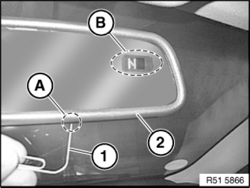

51 16 ... Calibrating Compass In Interior Rearview Mirror (From 09/08)
51 16 ... Calibrating compass in interior rearview mirror (from 09/08)

NOTE:
It may be necessary to alter the magnetic deflection zone if the vehicle is more than two ranges away from the set deflection zone.
For numbers of magnetic deflection zone, refer to operating instructions.
It may be necessary to calibrate the compass if:
- "C" appears in compass display
- there is no compass display
- not all compass directions are displayed correctly
Different time-based adjustment menus can be obtained by means of the control button:
- 0 to 3 seconds: Display ON/OF
- 3 to 6 seconds: Adjustment of the magnetic field zones (0 -15)
- 6 to 9 seconds: Calibration (C)
- 9 to 12 seconds: Right-hand drive or left-hand drive vehicles (R or L)
- 12 to 15 seconds: English or German (E or O)
Adjusting magnetic field zone:
- Press and hold down control button (A) on inside mirror (2) with a suitable tool (1) for 3 -6 seconds. The currently set magnetic field zone is indicated in the compass display (B) (default setting "8" for Central Europe). Release control button (A) briefly and select magnetic field zone (1-15) by pressing control button (A) again. Release setting button (A) when the desired magnetic field zone is selected. The selection menu is automatically exited after approx. 5 seconds.
- The compass must be recalibrated after the magnetic field zone has been changed.
Calibrating compass:
- Press and hold down setting button (A) on inside mirror (2) for 6 9 seconds. Release setting button (A) as soon as "C" is indicated in the compass display (B).
- Drive vehicle 2 to -3 times in a full circle at approx. 7-10 km/h. The circle must be at least twice the vehicle's turning circle. Calibration is complete as soon as a valid direction is displayed.
- For convertibles and vehicles with hardtops only:
The digital compass must be calibrated once with the soft top or hardtop closed and once with the soft top or hardtop open.

Setting right-hand drive or left-hand drive vehicle:
- Press and hold down control button (A) on inside mirror (2) for 9 12 seconds. The currently set vehicle type is indicated in the compass display (B) (default setting "L" for left-hand drive vehicle). Release setting button (A) briefly and select vehicle ("L" or "R") by pressing setting button (A) again. Release setting button (A) when the desired vehicle type is selected. The selection menu is automatically exited after approx. 5 seconds.
- The compass must be recalibrated after the right/left hand drive vehicle setting is made..

Setting language of compass display:
- Press and hold down control button (A) on inside mirror (2) for 12 -15 seconds. The currently set language is indicated in the compass display (B) (default setting "E" for English). Release setting button (A) briefly and select language (E for English or O for German) by pressing setting button (A) again. Release setting button (A) when the desired language is selected. The selection menu is automatically exited after approx. 5 seconds.